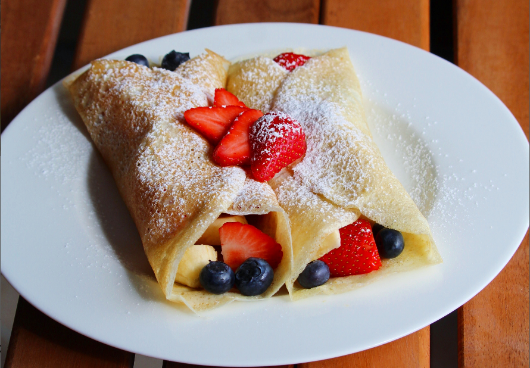

Dessert Crepes recipe

Description
Today we will show you how to make some excellent tasting dessert crepes, that you can
eat either alone, at coffee with your friends and family or just after coming home
from a long day of work. Let's start!
You will ned the following ingredients:
- 4 eggs, lightly beaten
- 1 and 1/3 cups milk
- 2 tablespoons butter, melted
- 1 cup all-purpose flour
- 2 tablespoons white sugar
- 1/2 teaspoon salt
Follow these steps:
- In large bowl, whisk together eggs, milk, melted butter,
flour sugar and salt until smooth.
- Heat a medium-sized skillet or crepe pan over medium heat.
Grease pan with a small amount of butter or oil applied with a brush or paper towel. Using a
serving spoon or small ladle, sppon about 3 tablespoons crepe batter into hot pan, tilting the
pan so that bottom surface is evenly coated. Cook over medium heat, 1 to 2 minutes ona side, or
until golden brown. Serve immediately.
Motivated by:
this